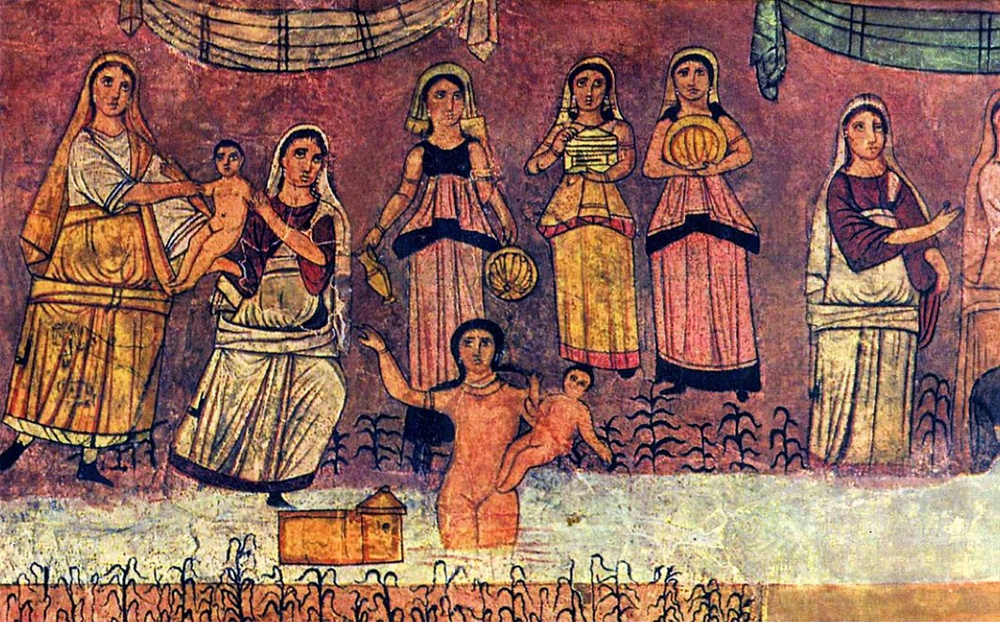
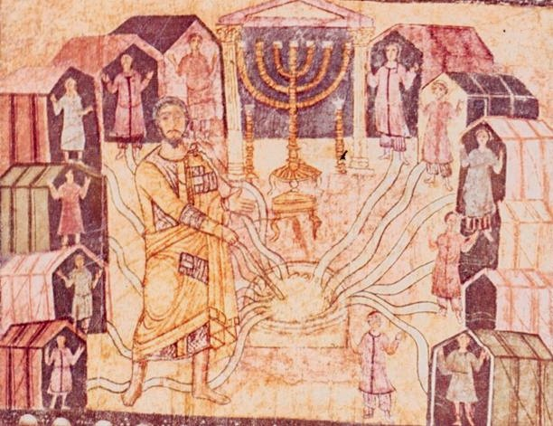
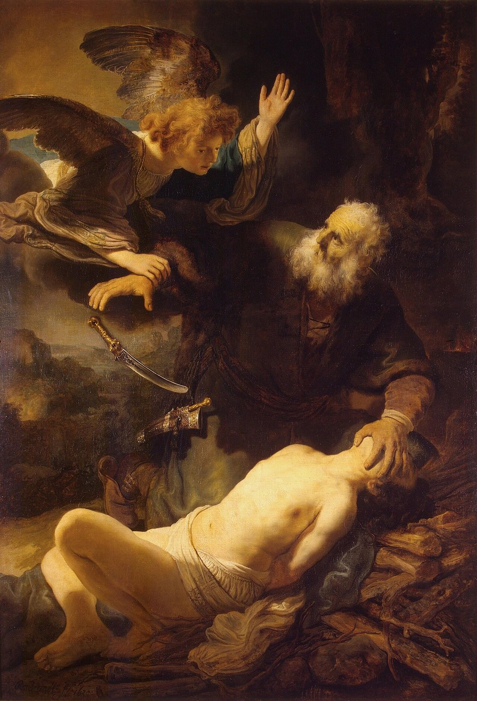
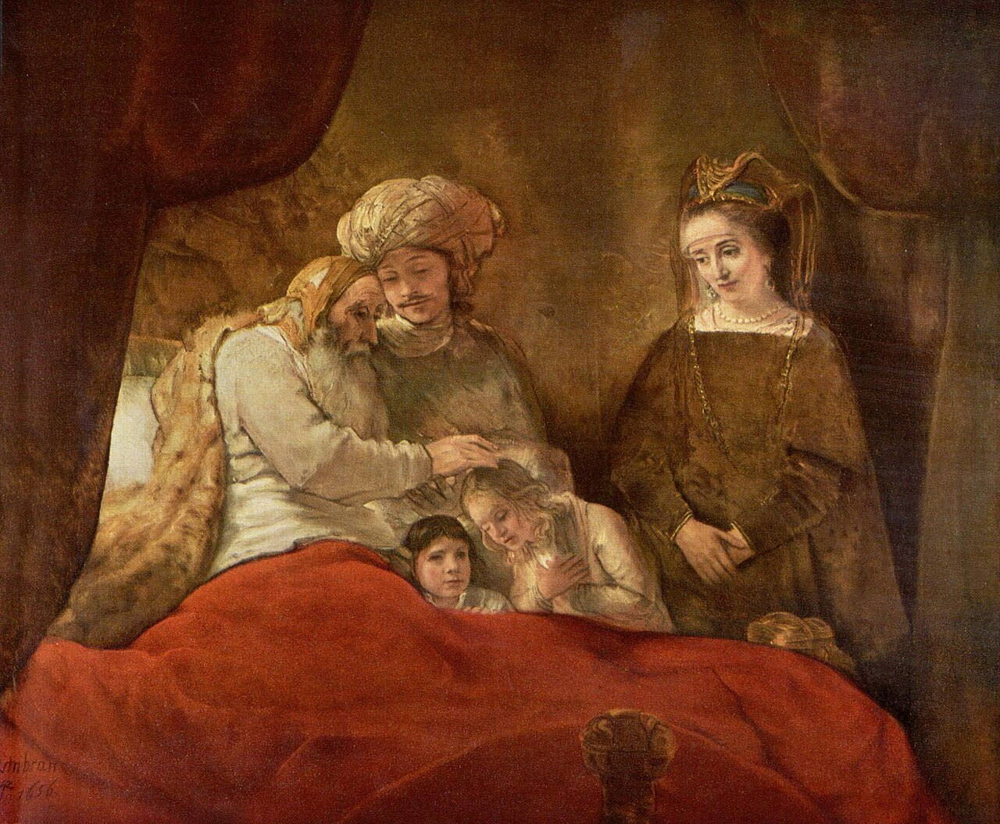
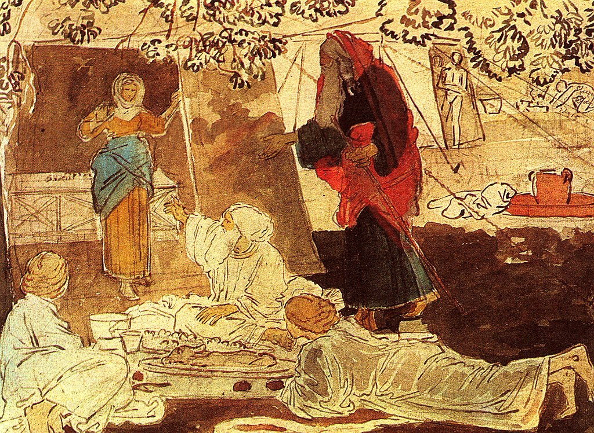
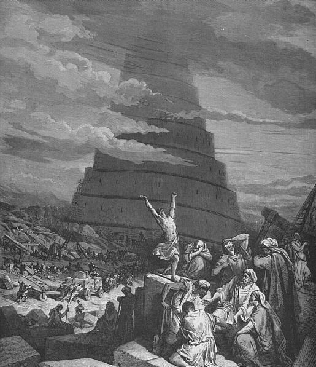

Читать руками: иллюстрация как исследование Писания
Бецалель и замысел
Первый человек, о котором Тора говорит, что Бог исполнил его Духом, — художник. Бецалель, сын Ури, сына Хура, призван по имени, и сразу перечислено, что он получил: мудрость, разумение, ведение и всякое искусство (Исх 31:2–3). Следующий стих в еврейском тексте называет цель этих даров: ЛАХШОВ МАХАШАВОТ, замышлять замыслы. Здесь стоит слово МАХАШАВА (מַחֲשָׁבָה, замысел, H4284). Тем же словом Писание называет помышления человеческого сердца (Быт 6:5) и намерения Бога (Иер 29:11; Ис 55:8).
Работа художника в Торе начинается с мысли. Прежде чем отлить светильник и вырезать херувимов, Бецалель должен был понять сказанное Моше и воплотить образец, показанный на горе (Исх 25:40). Иллюстратор Библии стоит перед той же задачей: у него есть слово, и это слово нужно перевести в форму. Перевод требует понимания, поэтому иллюстрация становится способом читать текст и проверять прочитанное.
Там, где текст молчит
Библейский рассказ скуп на зримые подробности. О жертвоприношении Ицхака (Быт 22) сказано, куда шли, что несли и какими словами обменялись отец и сын. Сколько лет было Ицхаку, сопротивлялся ли он, что было на лице Авраама и где был ангел, когда позвал с неба, — об этом текст молчит.
Толкователь может оставить эти вопросы открытыми. Художник такой возможности лишён: ему нужно нарисовать либо мальчика, либо взрослого мужчину, либо связанного, либо свободного. Каждый выбор совпадает с каким-то толкованием или спорит с ним. Взрослый Ицхак совпадает с мидрашной традицией, которая называет его возраст тридцать семь лет (Седер Олам 1; Берешит Рабба 56), и делает его покорность добровольной. Ребёнок на жертвеннике переносит всю тяжесть испытания на отца.
Иллюстрация показывает места, которые читатель проходит не замечая. Художник, севший за работу, быстро узнаёт, чего он не знает о тексте: кто стоял рядом, какое было время суток, что держали в руках. Вопросы, которые для читателя остаются невидимыми, для него становятся препятствием, и чтобы его преодолеть, приходится снова перечитывать стих, следить за глаголами, искать параллели в других книгах.
Дура-Европос

Синагога в Дура-Европосе на Евфрате расписана около 244–245 годов и найдена в 1932 году. Это самый ранний известный цикл еврейских изображений на библейские сюжеты, и по нему видно, как читали Тору евреи III века.
Дочь фараона на фреске стоит в водах Нила и держит младенца Моше. В тексте сказано только, что она вышла на реку мыться и послала служанку за корзиной (Исх 2:5). Художник ввёл царевну в реку и соединил два события в одно: она сама находит ребёнка в воде.
На панели с колодцем в пустыне Моше стоит у источника, и от него текут двенадцать потоков к шатрам колен. Такой детали нет ни в Исх 17, ни в Чис 21:16–18. Её принято связывать с мидрашным преданием о колодце, который шёл за Израилем по пустыне. Фреска показывает текст вместе с тем толкованием, с которым его читала община.


Художники Дуры нашли и решение самой трудной задачи. Божественное присутствие на фресках обозначено рукой, протянутой с неба: над Авраамом на горе Мория, над расступившимся морем, над долиной сухих костей в сценах из Иез 37. Этот образ взят из самого текста, где Бог выводит народ «рукою крепкою» (Втор 26:8). Так художник изобразил действие Бога и не нарушил запрета Второй заповеди: рука передаёт поступок и оставляет невидимым того, кто действует.
Рембрандт: толкование жестом
В тексте Быт 22:11 ангел зовёт Авраама с неба. На картине Рембрандта 1635 года он хватает Авраама за запястье, и нож падает в воздухе. Рассказ сжат до одного мгновения, и в этом мгновении становится видно то, о чём текст говорит словами «не поднимай руки твоей» (Быт 22:12): рука уже поднята, и остановить её можно только силой.

В «Благословении Яакова» 1656 года Рембрандт держится ближе к тексту и читает его внимательнее. В Быт 48:17 сказано, что Йосефу было неприятно, когда отец положил правую руку на младшего, и он попытался переложить её на голову Менаше. На картине Йосеф касается руки отца осторожно, почти поддерживает её. Спор сына с отцом художник передал жестом почтительным и нежным, и ответ Яакова «знаю, сын мой, знаю» (Быт 48:19) звучит на картине без слов. Рядом стоит Аснат, мать мальчиков, хотя в этой сцене она не упомянута. Художник ввёл её так же, как толкователь вводит в рассказ лицо, о котором текст молчит.

Археологии у Рембрандта почти нет: тюрбаны и парча взяты из амстердамских лавок. Точность он ищет в другом — в руках, взглядах и паузах между людьми. Это исследование того, что чувствовали люди на страницах Писания.
Иванов и Шагал: археология и память
Александр Иванов в последние годы жизни работал над «Библейскими эскизами». Он читал новейшие для своего времени труды по истории Библии и издания раскопок в Месопотамии и Египте. В его акварелях праотцы одеты и поставлены так, как люди на ассирийских и египетских рельефах, а сцены выстроены фризом. Иванов задавал вопрос, как выглядел мир, в котором жил Авраам, и ответ на него вел к самому тексту: к его времени, обычаям и соседям. Работа осталась незаконченной, и в ней видно само исследование, ещё не пришедшее к выводу.


Марк Шагал начал офорты к Библии по заказу Амбруаза Воллара и в 1931 году съездил в Землю Израиля; серия вышла в 1956 году. Его Авраам, Моше и пророки похожи на стариков из Витебска. Шагал исследует другую сторону текста — его жизнь в народе, который три тысячи лет его читал. Праотец в его листах похож на деда, и это сходство точно по существу: Тора сама связывает поколения родословиями и велит отцам рассказывать детям (Исх 13:8; Втор 6:7).
Иванов идёт от текста в глубь веков, Шагал — от текста к сегодняшнему читателю. Оба пути проверяют рассказ на прочность: первый ищет, что в нём исторично, второй — что в нём продолжает жить.
Граница метода
Изображение закрепляет одно прочтение и вытесняет остальные. Гравюры Гюстава Доре (1866) разошлись по всему миру, и многие поколения видели потоп, Вавилонскую башню и пророков глазами французского романтика. Картина запоминается легче стиха, и толкование художника начинают принимать за текст.


Поэтому иллюстрация становится исследованием лишь тогда, когда художник следит за тем, откуда взята каждая деталь: из стиха, из мидраша, из археологии или из собственного воображения. Толкователь ссылается на источник в сноске; у художника сносок нет, и ответственность за каждую линию лежит на нём самом. Хорошая иллюстрация возвращает зрителя к стиху с новым вопросом: почему Аснат здесь, почему царевна в воде, почему Ицхак взрослый.
Другая граница проведена самой Торой. Вторая заповедь запрещает делать изображение для поклонения (Исх 20:4–5), и та же Тора поручает Бецалелю вырезать херувимов для святилища (Исх 25:18). Работа художника оправдана тем, кому она служит. Херувимы стояли над ковчегом, в котором лежали скрижали завета, и обращали лица к ним (Исх 25:20–21). Иллюстратор Писания делает то же самое: его работа стоит рядом со словом и поворачивает читателя к нему.